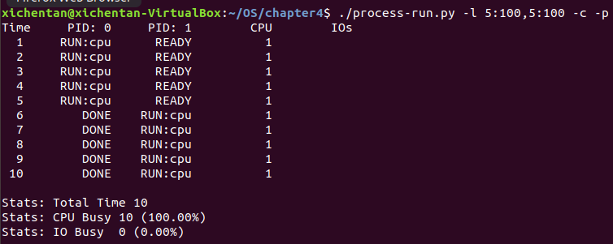
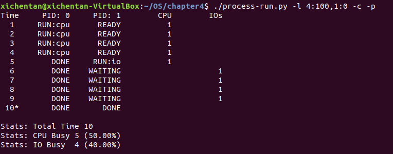
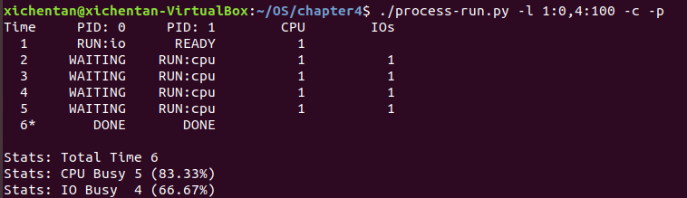
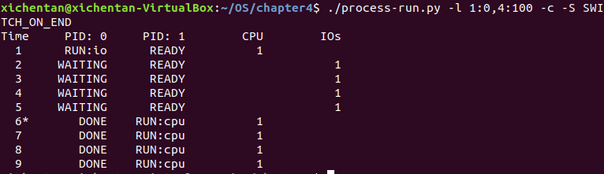
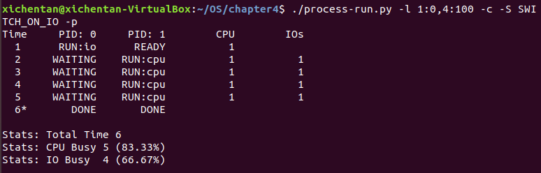
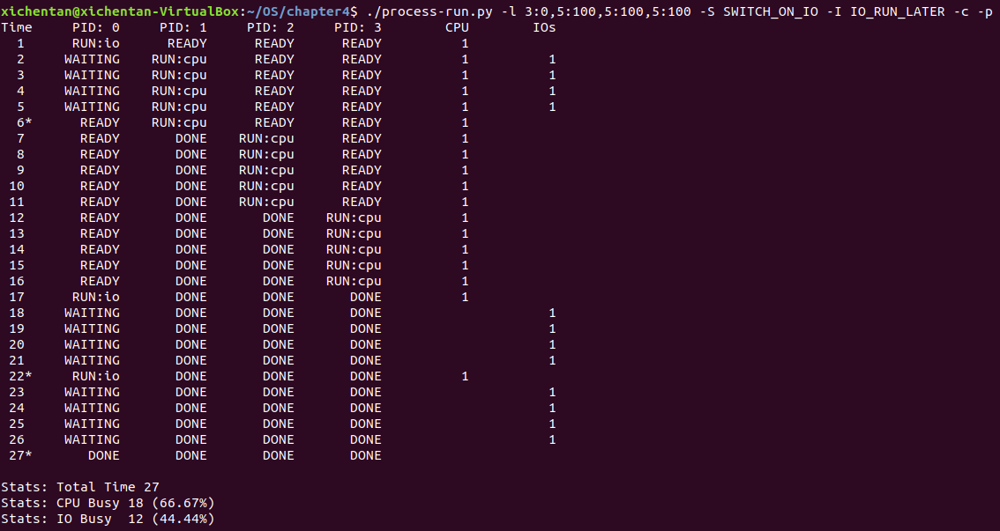
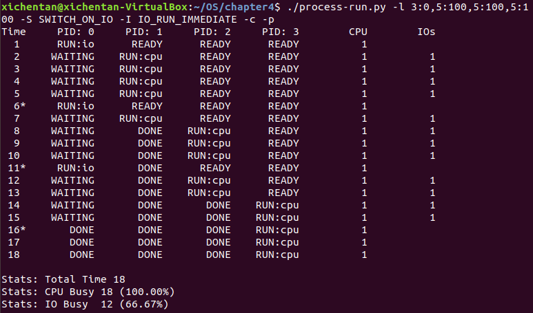

Chapter 4 The Abstraction — The Process
4.1 The Abstraction: A Process
Machine state of a process:
- memory： 存指令和数据
- registers：指令需要读写更新寄存器(如program counter，stack pointer和frame pointer)
4.2 Process API
- Create：创建新的进程
- Destroy：销毁进程
- Wait：进程等待
- Miscellaneous Control：其他的调度比如挂起和恢复
- Status：查询进程信息
4.3 Process Creation：A Little More Detail
在UNIX系统中，每个进程默认有3中file descriptors，for standard input，output，和error。
4.4 Process States
简单来说，一个进程可以有以下三种状态：
- Running：The process is running on a processor
- Ready：A process is ready to run but not running yet
- Blocked：process等待其他事件发生才能运行
4.5 Data Structures
Process control block(PCB)可以储存一个process的信息，方便在不同的process之间切换，这些信息包括address space，CPU resister信息等等。
4.6 Homework
Run process-run.pywith the following flags: -l 5:100,5:100. What should the CPU utilization be (e.g., the percent of time the CPU is in use?) Why do you know this? Use the -c and -p flags to see if you were right.

CPU使用率为100%，IO进程为0。Now run with these flags: ./process-run.py -l 4:100,1:0. These flags specify one process with 4 instructions (all to use the CPU), and one that simply issues an I/O and waits for it to be done. How long does it take to complete both processes? Use -c and -p to find out if you were right.

CPU占用50%，I/O占用40%。Switch the order of the processes: -l 1:0,4:100. What happens now? Does switching the order matter? Why? (As always, use -c and -p to see if you were right)

在等待I/O的时候process1也可以运行了，提高了运行效率。We’ll now explore some of the other flags. One important flag is -S, which determines how the system reacts when a process issues an I/O. With the flag set to SWITCH ON END, the system will NOT switch to another process while one is doing I/O, instead waiting until the process is completely finished. What happens when you run the following two processes (-l 1:0,4:100 -c -S SWITCH_ON_END), one doing I/O and the other doing CPU work?

在进程0等待I/O的时候进程1不能运行Now, run the same processes, but with the switching behavior set to switch to another process whenever one is WAITING for I/O (-l 1:0,4:100 -c -S SWITCH_ON_IO).What happens now? Use -c and -p to confirm that you are right.

在进程0等待I/O的时候进程1可以运行One other important behavior is what to do when an I/O completes. With -I IO_RUN_LATER, when an I/O completes, the process that issued it is not necessarily run right away; rather,whatever was running at the time keeps running. What happens when you run this combination of processes? (Run ./process-run.py -l 3:0,5:100,5:100,5:100 -S SWITCH_ON_IO -I IO_RUN_LATER -c -p) Are system resources being effectively utilized?

Process0 跑完第一个I/O之后等待其他三个进程跑完之后才继续跑剩下的I/O。Now run the same processes, but with -I IO_RUN_IMMEDIATE set, which immediately runs the process that issued the I/O. How does this behavior differ? Why might running a process that just completed an I/O again be a good idea?

现在除了process0之外的进程也可以在其等待I/O的时候运行了，提高了效率。